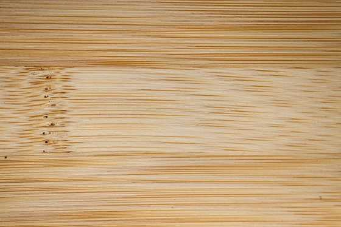

愛知県瀬戸市・西吉田町の民家カフェ
陶芸家が暮らした家で、
ゆっくり一杯を。
元陶芸家の一軒家を改装した民家カフェ。靴を脱いで上がる、のんびりとした時間をご用意しています。
お店の由来・想い
焼き物のまち瀬戸の、住宅街の一軒家。
房珈琲は、瀬戸市の住宅街にある、元陶芸家の一軒家を改装した喫茶店です。細い坂道を上った先に玄関があり、靴を脱いで上がる造りで、土間や日本家屋のたたずまいが印象的と紹介されています。席数は16席で、全席禁煙、駐車場があります。
ブレンドのほか、ブラジルやグアテマラなどのシングルオリジンのコーヒーが紹介されています。このページでは、使い込まれた木や光のやわらかさを、色と文章で表しました。
情報源: 食べログ / TikTok投稿 / Instagram(「民家カフェです」)
店名「房珈琲」の意味やオーナーの想いは確認できていません。上記以外の言い回しは制作側の表現です。




メニュー・提供内容
コーヒーと、手づくりのおやつ。
コーヒー
ブレンド、シングルオリジンなど。
ケーキ・パン
抹茶ケーキ、チーズケーキ、パウンドケーキなどが紹介されています。
軽食
トースト、ピザトーストのセットなどが紹介されています。
提供内容は第三者の紹介を参考にしたもので、変わることがあります。価格・詳細は 準備中


口コミ
お客さまの声(イメージ例)
イメージ例
玄関で靴を脱ぐと、家に招かれたような気持ちになりました。コーヒーをゆっくり味わえます。
イメージ例
畳の部屋で、ケーキとコーヒーのセット。時間を忘れてのんびりできました。
イメージ例
坂の上の静かな家で、窓の光を眺めながらの一杯。また来たいと思います。
上記は制作側が作成したイメージ例で、実在のお客さまの声ではありません。
アクセス
ご案内
| 所在地 | 〒489-0807 愛知県瀬戸市西吉田町29−１６ |
|---|---|
| 電話 | 準備中 |
| 営業時間 | 準備中 |
| 定休日 | 準備中 |
| SNS | Instagram @fusa.coffee |
営業日・臨時休業などの最新情報は、Instagramをご確認ください。


写真クレジット
写真はフリー素材のイメージで、店舗の実際の様子ではありません。
- images/beans.jpg: 「Roasted coffee beans」 MarkSweep / 出典 / パブリックドメイン (creativecommons.org)
- images/cupbean.jpg: 「Coffee cup and coffee bean」 mcfoodie / 出典 / CC0 1.0 (creativecommons.org)
- images/espr.jpg: 「Espresso Coffee 01」 Jubair1985 / 出典 / CC0 1.0 (creativecommons.org)
- images/cafetable.jpg: 「Cup of coffee on café table」 Ssu / 出典 / CC BY-SA 4.0 (creativecommons.org)
- images/machine.jpg: 「Close-up of espresso machine with two brown coffee cups」 Chevanon Photography / 出典 / CC0 1.0 (creativecommons.org)
- images/turq.jpg: 「Bright turquoise mug sits on a wooden table by the window, reflecting morning light, inviting a quiet moment of reflection」 Shixart1985 / 出典 / CC BY 2.0 (creativecommons.org)
- images/moderncup.jpg: 「Coffee Cup on Modern Table」 Genaro35 / 出典 / CC0 1.0 (creativecommons.org)
- images/tabletop.jpg: 「Weatherworn top of wooden table」 W.carter / 出典 / CC0 1.0 (creativecommons.org)
- images/planks.jpg: 「Weatherworn planks on top of wooden table」 W.carter / 出典 / CC0 1.0 (creativecommons.org)
- images/woodbg.jpg: 「Wood Texture Background」 Bango Textures / 出典 / CC0 1.0 (creativecommons.org)
- images/curtain.jpg: 「Sunlight and shadows on white cotton curtain」 W.carter / 出典 / パブリックドメイン (creativecommons.org)
- images/backrest.jpg: 「Backrest 01」 Jeuwre / 出典 / CC BY-SA 4.0 (creativecommons.org)
- images/monstera.jpg: 「Monstera deliciosa DSC02605」 Smatu / 出典 / CC BY-SA 4.0 (creativecommons.org)
- images/calathea.jpg: 「Houseplant Calathea orbifolia」 Supsoph / 出典 / CC BY-SA 4.0 (creativecommons.org)